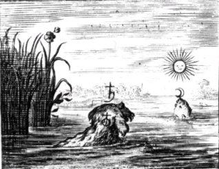
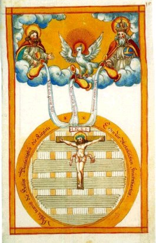

Emblema XXII.
revu le 6 mai 2002
Plumbo habito candido fac opus mulierum, hocest, Coque.
(Après t’être procuré du plomb blanc, opère l’œuvre des femmes, c’est-à-dire cuis1.)
Tu aimes retirer grand fruit d’un peu de peine ?
De neige enduis le noir visage de Saturne.
La matière d’un plomb très blanc t’apparaîtra.
Tu n’auras plus alors que le travail des femmes.
Elles placent au feu leurs chaudrons. Cuis de même,
Mais il faut que la truite en ses eaux se dissolve2.
On place aux carrefours des statues de Mercure en même temps qu’une indication, et une inscription pour conduire dans le bon chemin les voyageurs hésitants. De même aussi les philosophes parsèment leurs livres allégoriques et ambigus de quelques phrases incisives pour que l’investigateur de la vérité soit, grâce à elles, prévenu et comme conduit par la main sur le véritable sentier. Le présent titre emblématique est l’une d’elles. Le sens en est que de l’airain philosophique on doit faire du plomb, et avec le plomb, de l’étain, que Geber appelle plomb blanc, en même temps qu’il enseigne comment on passe de Saturne à Jupiter en lavant avec Mercure3. C’est pourquoi il faut ajouter foi à cet indice, tout semblable qu’il soit à un radotage de vieillard, pour le cas où il révélerait où se trouvent les bœufs philosophiques, puisque, dit-il, les montagnes les détenaient, et qu’ils étaient sous ces montagnes4. Beaucoup en effet, comme l’atteste Arnaud dans sa Nouvelle Lumière, au chapitre Ier, errent dans les montagnes sans connaître ces animaux5. Pourtant ils sont vendus publiquement à un prix minime. Au sommet des montagnes, même l’été, on observe parfois des neiges et très souvent des nuages qui, à la façon d’une vapeur ou d’une eau, lavent le plomb noir et le changent en blancheur. Au fond des vallées, dans leur creux, on trouve des cristaux de glace congelés et durcis, en même temps que la pierre spéculaire et le talc dont l’usage est recommandé pour la blancheur et l’agrément du teint, si l’on en fait une huile6. Mais l’on y trouve surtout un clair Mercure qui court ; bien préparé, il guérit Saturne de ses taches et le porte sur le trône de Jupiter. Mais Saturne et Jupiter ne doivent pas être entendus comme des corps vulgaires, car les métaux vulgaires n’entrent pas dans l’œuvre physique, mais ce sont des corps préparés et rendus naturels au moyen d’une longue préparation.
Saturne est le père de tous les Gentils, ou plutôt de tous les hommes d’or et la première porte des secrets. Son fils Jupiter lui succéda, il mit fin au règne de son père et lui ôta sa virilité afin, évidemment, qu’il n’engendre plus d’enfants. De son membre viril projeté dans la mer naquit Vénus, la plus belle des femmes. De Jupiter, qui est le plomb blanc préparé, naquirent les autres planètes : Mars de Junon, Mercure de Maïa fille d’Atlas, roi de Mauritanie, la Lune et le Soleil de Latone.7 Tous les quatre viennent au jour au moyen de la simple coction, qui est l’œuvre des femmes. On entend par coction la maturation ou dispersion des parties crues, qui s’opère grâce à Vulcain dans les vases de la philosophie. Il ne faut pas croire en effet que ce soit la cuisson vulgaire quant à la manière d’opérer, mais l’une et l’autre ont une même fin ; car de même que la femme amène à maturité des poissons dans l’eau, c’est-à-dire résout en air et en eau toute leur humidité superflue, les fait bouillir et cuire, le philosophe agit pareillement avec son sujet. Il le fait macérer dans sa propre eau, qui est plus forte que le vinaigre le plus aigre, le liquéfie avec elle, le dissout, le coagule, le fixe dans le vase d’Hermès dont les jointures sont très rigoureusement fermées, comme il convient, de peur que l’eau ne s’exhale et que le contenu du vase ne soit brûlé. C’est le vase au-dessus du vase, et la marmite philosophique, le bain laconien dans lequel le vieillard transpire8.
Il en est qui font bouillir les poissons, les crabes, les écrevisses ou les pois frais dans une double marmite, de façon que la matière à cuire soit dans la marmite supérieure et l’eau seule dans la marmite inférieure. Les marmites sont disposées l’une sur l’autre et entourées de cercles pour empêcher que la vapeur ne s’échappe. Grâce à ce procédé la vapeur d’eau monte seule, pénètre et fait mûrir le contenu, le rend tendre et mou d’une façon beaucoup plus parfaite que s’il avait bouilli dans l’eau. C’est le procédé des philosophes digne d’éloges au plus haut point ; par lui, ils amollissent ce qui est dur, dissolvent ce qui est compact, raréfient ce qui est dense. C’est en effet l’air, c’est-à-dire une vapeur insensible, qui fait mûrir les fruits dans les arbres, les cuit et les amène a la perfection, et non l’eau crue et froide en tant que telle. C’est l’air aussi qui, dans les jardins des Hespérides, teint et colore les pommes d’or9. Car, si l’on observe bien, l’ébullition de l’eau, par le moyen de laquelle les viandes crues sont cuites jusqu’à ce qu’elles soient bonnes à manger, n’est rien d’autre que la raréfaction de l’eau et sa transmutation en vapeur aérienne, puisque les bulles sont de l’air contenu à l’intérieur de l’eau, qui s’évanouissent facilement, l’air sorti de l’eau se transportant dans sa sphère et l’eau se transportant dans son centre10.
Notes1. Le plomb blanc ne désigne pas ici l'étain [plumbum album]. C'est la Coction du 3ème oeuvre qui est ici désignée et le plomb blanc résulte de la transformation du plomb des Sages par le biais de la chaleur.
2. Cette truite est l'équivalent des poissons que nous présente Lambsprinck dans la première gravure de son De Lapide Philosophorum. Mais il y a une nuance. C'est que
FIGURE I
(Le Lion d'Or ou Vinaigre des Sages - De Goude Leeuw : blanchir Saturne)Lambsprinck n'entend pas des mêmes épithètes les principes des philosophes. Aussi prend-il la Mer pour le Corps. Mais l'idée symbolique est la même et les deux poissons représentent le Corps er l'Âme. La Mer représente évidemment le Mercure, c'est-à-dire l'Esprit. Blanchir Saturne consiste à cuire la matière du Compost et assurer la transition du régime de Saturne vers celui de la Lune en passant par la teinte grise de celui de Jupiter.
3. C'est l'opération dont nous venons de parler. Il est évident que les termes de plomb et d'étain ne recouvrent en aucune manière les métaux vulgaires.
4. Voici ce que dit Pernety du boeuf :Boeuf. Animal adoré en Égypte. Voyez APIS, SÉRAPIS. La Fable feint qu’Hercule enleva les bœufs de Géryon, Mercure ceux qu’Apollon gardait pour Admete. Voyez l’explication de ces fictions dans les Fables Egypt. et Grecques dévoilées, liv. 1, chap. 1 et suiv., liv. 2, chap. 14, $ 1 et liv. 5. chap. 12.Voici un extrait du tome I des Fables Egyptiennes et Grecques, pour expliciter ces articles du Dictionnaire :
Apis. Chez les anciens Égyptiens, était un bœuf noir partout le corps, excepté une tache blanche en forme de croissant ou approchant, que les Prêtres nourrissaient dans le temple de Vulcain, auquel ils le sacrifiaient au bout de quelques années, en le noyant, et lui donnaient ensuite le nom de Sérapis. Ils faisaient après un grand deuil de sa mort jusqu’à ce qu’ils en eussent trouvé un semblable pour lui être substitué. Ce bœuf, selon l’explication des Philosophes Spagyriques, porte par sa couleur noire et blanche, le vrai caractère de la matière de leur oeuvre, et le symbole d’Osiris et d’Isis. Ce que les Grecs ont ensuite imité par la fabIe du Minotaure, les bœufs de Geryon, les bœufs de Jason et les autres. Voyez les Fables Egypt. et Grecq. dévoilées, liv. 1, section 3, chap. 1.Nous avons dit qu’Osiris & Isis étaient le symbole de la matière de l’Art Hermétique ; que l’un représentait le feu de la Nature, le principe igné & générant, le mâle & l’agent ; que l’autre ou Isis signifiait l’humeur radicale, la terre, ou la matrice & le siège de ce feu, le principe passif ou la femelle ; & que tous deux ne formaient qu’un même sujet composé de ces deux substances. Osiris était le même que Sérapis ou, Amun, que quelques-uns disent Amon & Ammon, représenté par une tête de Bélier, ou avec des cornes de Bélier ; parce que cet animal, suivant les Auteurs (Kirch. Obél. Pamph. p. 295.) cités par le P. Kircher, est d’une nature chaude & humide. On voyait Isis avec une tête de Taureau, parce qu’elle était prise pour la Lune, dont le croissant est représenté par les cornes de cet animal ; & que d’ailleurs il est pesant & terrestre. Anubis dans l’Antique de Boissart, se trouve placé encre Sérapis & Apis, pour faire entendre qu’il est composé des deux, ou qu’il en vient ; il est donc fils d’Osiris & d’Isis, & voici comment. Cette matière de l’Art Sacerdotal, mise dans le vase, se dissout en eau mercurielle ; cette eau forme le Mercure Philosophique ou Anubis. Plutarque dit que, quoique fort jeune, il fut le premier qui annonça à Isis la mort d’Osiris, parce que ce Mercure ne paraît qu’après la dissolution & la putréfaction désignées par la mort de ce Prince.Il est clair qu'ici, c'est bien le Compost qui est désigné, c'est-à-dire le mélange du Mercure commun - Mercure des philosophes - et des deux Soufres dont l'un est l'Âme de la pierre [entendez la teinture] et l'autre le Sel ou principe pesant [entendez la terre de la pierre, c'est-à-dire son corps].
5. Pernety, Fables, III, 1Les Grecs, instruits par les Egyptiens, représentaient aussi la matière Philosophique par un ou plusieurs Taureaux, comme on le voit dans la fable du Minotaure, renfermé dans le Labyrinthe de Crète, vaincu par Thésée, avec le Secours du filet d’Ariadne ; par les Bœufs qu’Hercule enleva à Géryon ; ceux d’Augias ; par les Bœufs du Soleil, qui paissaient en Trinacrie, ceux que Mercure vola ; par les Taureaux que Jason fut obligé de mettre sous le joug, pour parvenir à enlever la Toison d’or, & bien d'autres qu’on peut voir dans les Fables. Tous ces Bœufs n’étaient pas noirs & blancs comme devait l’être Apis, puisque ceux de Géryon étaient rouges ; mais il faut observer que la couleur noire & la blanche qui lui succède dans les opérations de l’œuvre, ne sont pas les deux seules qui surviennent à la matière ; la couleur rouge vient aussi après la blanche, & ceux qui ont inventé ces fables ont eu en vue ces différentes circonstances. Les voiles du vaisseau de Thésée étaient noires, même après qu’il eût vaincu le Minotaure, & celles du vaisseau d’Ulysse l’étaient aussi, lorsqu’il partit pour reconduire Chryseis à son père ; mais il en prit de blanches pour son retour, parce que les deux circonstances étaient bien différences, comme nous le verrons dans leurs histoires.6. Sur la pierre spéculaire, voyez réincrudation. On la nomme encore gypse ou pierre du Levant, ou enfin pierre de Jésus. Sur le talc, voyez en recherche.
7. Mars Pernety, Fables, Livre II, cap. 1 :La Toison d’or était suspendue dans la forêt de Mars, enceinte d’un bon mur, & l’on ne pouvait y entrer que par une seule porte gardée par un horrible Dragon, fils de Typhon & d’Echidna. Jason devait mettre sous le joug deux Taureaux, présent de Vulcain, qui avaient les pieds & les cornes d’airain, & qui jetaient des tourbillons de feu & de flammes par la bouche & les narines ; les atteler à une charrue, leur faire labourer le champ de Mars, & y semer les dents du Dragon, qu’il fallait avoir tué auparavant.La figure II montre, en sa partie inférieure, un véritable christophore [porteur d'or ou du Christ] en ce motif tressé et entre-croisé. En haut sont figurés le Père, le Fils et le Saint Esprit.
FIGURE II
(extrait de : Martin Sturtz, De humido radicale, 1597, Ms. K II 8, 15r, Universität Bibliotek Basel. )
Derrière cette allégorie complexe est dissimulée la réincrudation des Soufres. Là encore, les Adeptes ont joué de subtilité sur le sens ubiquitaire qu'ils accordent aux noms des planètes. Mars ici n'est pas de le principe de l'acide vitriolique mais le symbole du régime correspondant dans le 3ème oeuvre. Dès lors, il n'est pas difficile de comprendre que la Toyson d'or est suspendue dans la forêt de Mars. Il faut comprendre que c'est à l'époque de ce régime que débute la réincrudation des Soufres, c'est-à-dire que le christophore [porte-or] et le Soufre rouge s'accrètent. Le dragon qui veille à l'entrée unique est le Mercure commun qu'il faut savoir transformer en Mercure double, c'est-à-dire philosophique. Les deux Taureaux sont les deux chaux métalliques qui arborent des signes de l'Airain des sages [du Rebis]. Les atteler à la charrue, c'est l'opération qui consiste à animer le Mercure. Y semer les dents du dragon consiste à préparer le levain grâce auquel l'Artiste va faire lever la pâte de son fondant. Sur Junon, voyez le passage que nous lui consacrons dans l'humide radical métallique.
8. Cette « transpiration » de la matière s'observe sur la gravure XIV du De LapidePhilosophorum de Lambsprinck. Comme on voit, lors de cette phase de l'oeuvre, le vieillard couronné est mis au lit et sue, cependant que l'on voit, par la fenêtre, une tourmente. La légende annexée à la figure indique : « Ici le Père sue violemment, de lui s'écoule l'Huile et la vraie Teinture des Philosophes. » L'allégorie est facile à décrypter. Le Mercure est transformé en un corps fluent lorsqu'il a été animé. Dans un premier temps, les chaux sont dissoutes dans ce fondant alkalin. La réincrudation se signale par la réapparition du Soufre, ce qui est exprimé ici par « l'huile ou teinture ». C'est une phase qui doit survenir vers le régime de Mars.
9. Jardin des Hespérides : voyez Matière. Pernety consacre un chapitre entier de ses Fables à cette légende. Voyez l'ouvrage sur le site hermétisme et alchimie.
10. Voyez le Mercure de Nature.On dit communément des minéraux qu’ils existent, & non pas qu’ils vivent, comme on le dit des animaux & des végétaux ; quoiqu’on puisse dire que les métaux tirent en quelque façon leur vie des minéraux, soit parce que dans leur génération il y a comme une jonction du mâle & de la femelle sous les noms de soufre & de mercure, qui par une fermentation, une circulation, & une cuisson continuée, se purifient avec le secours de sel de nature, se cuisent & se forment enfin en une masse que nous appelons métal, soit parce que les métaux parfaits contiennent un principe de vie, ou feu inné, qui devenu languissant, & comme sans mouvement sous la dure écorce qui le renferme, y est caché comme un trésor, jusqu’à ce qu’étant mis en liberté par une solution philosophique de cette écorce, il se développe & s’exalte par un mouvement végétatif, au plus haut degré de perfection que l’art puisse lui donner. [Pernety, Fables]